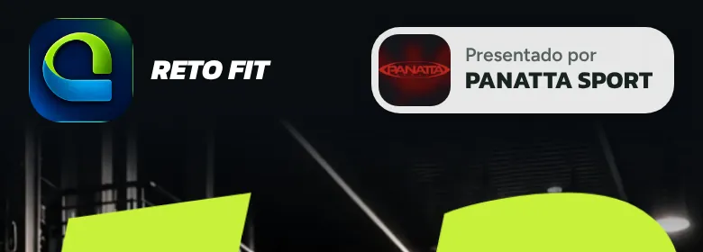
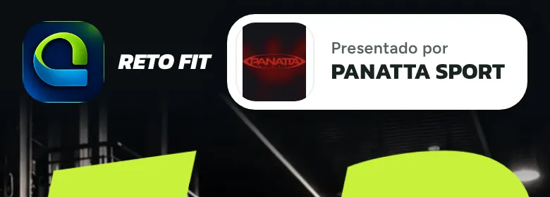
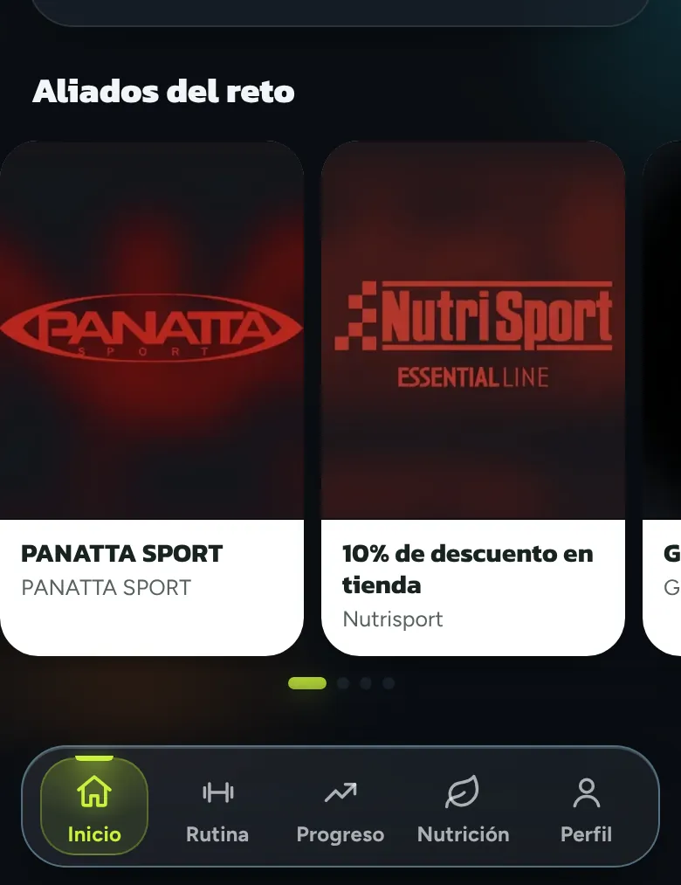
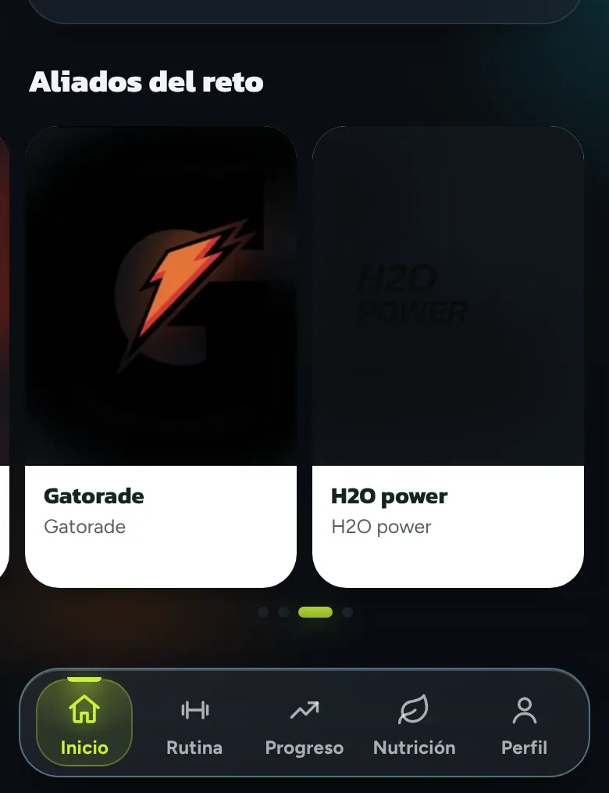
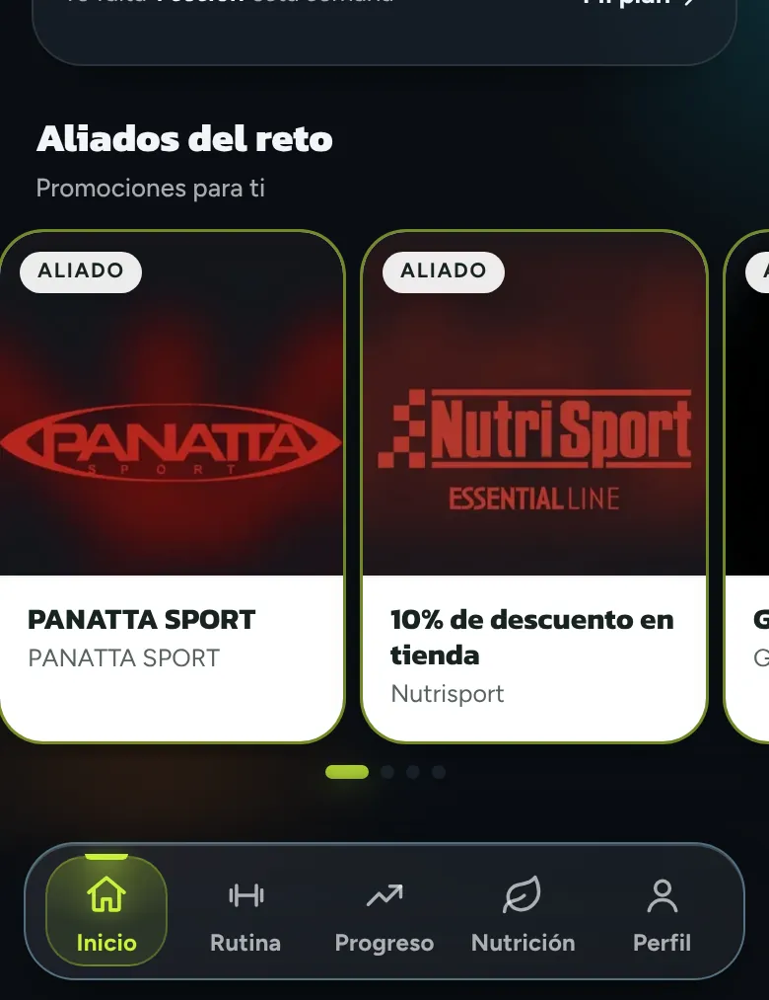
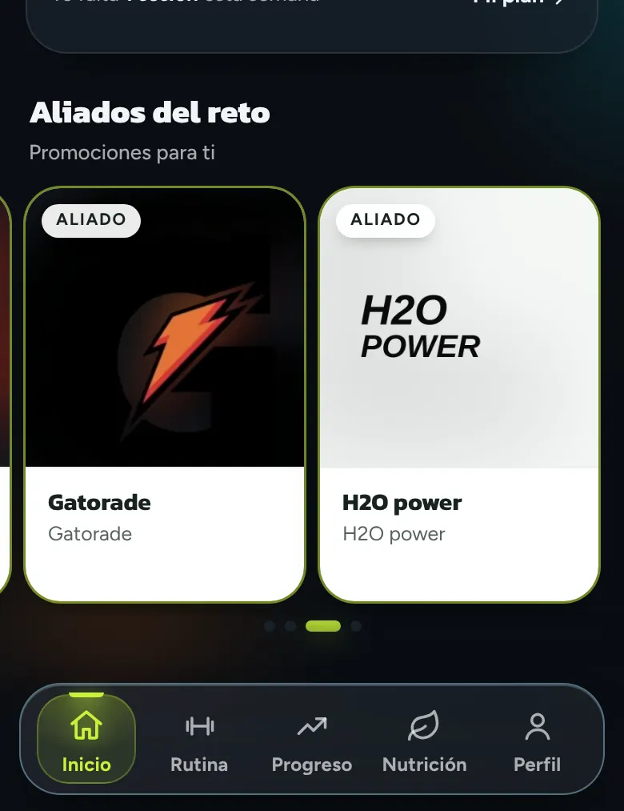

"Presentado por" más grande en la portada, y tarjetas de Aliados que ya no se pierden en el fondo de la app.
Portada · Presentado por

Actual

Propuesto
Inicio · Aliados del reto

Actual

Actual (al deslizar)

Propuesto

Propuesto (al deslizar)
Qué cambia
Presentado por: el logo pasa de 40 a 56 px (68 px en tableta) sobre fondo blanco, y el nombre de 13.5 a 16 px (18 en tableta).
Tarjetas de Aliados: borde de color del tema (lima en oscuro, naranja en Salvia) y etiqueta "Aliado", para que se lean como promociones y no como parte de la app.
Logos sueltos sobre fondo claro: antes iban sobre un fondo oscuro difuminado y un logo negro (como H2O power) desaparecía. Ahora se ven completos.
Cuadradas en lugar de altas, para no ocupar media pantalla, y la imagen sigue sin recortarse.